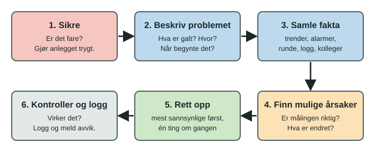

Avvik og feilsøking
Før eller senere går noe galt i alle anlegg. En temperatur stiger, en pumpe gir for lite, eller produktet blir utenfor spesifikasjonen. En god operatør gjetter ikke, men leter etter årsaken på en ryddig måte, steg for steg.
Hva er et avvik?
Et avvik er noe som ikke gikk som det skulle, eller som bryter med en regel eller prosedyre. I driften betyr det at prosessen, produktet eller utstyret ikke er slik det skal være. Eksempler:
- En temperatur er utenfor normalområdet.
- En prøve viser at produktet er utenfor spesifikasjonen.
- En pumpe vibrerer eller lager ny lyd.
- Noen har gjort en jobb uten å følge prosedyren.
I regulering betyr avvik forskjellen mellom settpunktet og måleverdien. Det er et tall som regulatoren bruker hele tiden, og et lite avvik er helt normalt. På denne siden, og i HMS, betyr avvik at noe ikke er som det skal. Det må du gjøre noe med.
Først: sikre
Når du oppdager et avvik, er det første spørsmålet alltid: Er det fare for folk, miljø eller utstyr? Hvis ja, skal du først gjøre anlegget trygt og varsle. Det kan bety å stoppe utstyr, gå over til reserveutstyr eller kjøre anlegget ned til en sikker tilstand, altså en tilstand der det ikke kan skje noe farlig. Følg prosedyren for nødstopp eller nedkjøring. Å finne årsaken kommer etterpå.
Feilsøking steg for steg
Feilsøking er å finne årsaken til et avvik og rette den opp. Det går raskere og blir sikrere når du gjør det i en fast rekkefølge.

- Sikre: Gjør anlegget trygt, slik det står over.
- Beskriv problemet: Hva er galt? Hvor i anlegget? Når begynte det? Kom det plutselig eller sakte? En presis beskrivelse gjør det lettere å finne årsaken, og lettere for andre å hjelpe deg.
- Samle fakta: Se på trendene og alarmlisten. Gå ut og se på utstyret. Les driftsloggen, og spør dem som var på jobb før deg.
- Finn mulige årsaker: Still disse spørsmålene:
- Er målingen riktig? Kanskje er det måleren som viser feil, ikke prosessen. Sammenlign med en lokal måler eller en annen måling som henger sammen med den.
- Hva er endret? Nytt råstoff, nytt settpunkt, vedlikehold i går, et annet vær? Avvik starter ofte rett etter en endring.
- Hvor starter det? Følg prosessen oppstrøms (dit stoffet kommer fra) og nedstrøms (dit det går videre). Et avvik i én tank kan ha årsak et helt annet sted.
- Rett opp: Prøv den mest sannsynlige årsaken først, og helst det som er enklest og sikrest å sjekke. Endre én ting om gangen. Endrer du mange ting samtidig, vet du ikke hva som hjalp.
- Kontroller og logg: Følg med på trendene og se at prosessen kommer tilbake i normalområdet. Skriv i driftsloggen hva som skjedde, hva du fant og hva du gjorde.
Eksempel fra anlegget
Situasjon: En buffertank tar imot væske fra en reaktor. En pumpe tar væsken ut av tanken og sender den videre. En nivåregulator styrer en ventil på utløpet, slik at nivået holdes på 50 %. Klokka 10 kommer alarmen «høyt nivå» ved 70 %.
Feilsøkingen:
- Sikre: Nivået er 70 %, og forriglingen stopper innløpet ved 90 %. Det er tid til å feilsøke, men operatøren følger med på nivået hele tiden.
- Beskriv: Trenden viser at nivået har steget jevnt fra 50 % klokka 08 til 70 % klokka 10.
- Samle fakta: Ventilen på utløpet er 100 % åpen. Mengdemåleren på innløpet viser normalt, 12 m³/h. Mengdemåleren på utløpet viser bare 8 m³/h. Normalt er den 12 m³/h.
- Mulige årsaker:
- Er målingen riktig? Nivåglasset på tanken viser også omtrent 70 %. Tanken tar 40 m³. Det kommer inn 4 m³/h mer enn det går ut, og på 2 timer blir det 4 m³/h · 2 h = 8 m³. Det er 8 m³ / 40 m³ = 0,20, altså 20 % av tanken. Det stemmer med at nivået har steget fra 50 til 70 %. Målingene henger sammen, så det er prosessen som har et problem.
- Hvor er problemet? Innløpet er normalt. Ventilen er helt åpen, men det går lite ut. Problemet ligger altså i utløpet: i pumpa eller i røret.
- Hva sier runden? Pumpa lager en knitrende lyd. Trykkmåleren på sugesiden, foran pumpa, viser lavere trykk enn vanlig, og trykket ut av pumpa er også lavt. Det tyder på at pumpa får for lite væske inn. Lyden kan være kavitasjon.
- Hva er endret? Driftsloggen viser at det i går kom råstoff fra en ny leverandør.
- Rett opp: Operatøren starter reservepumpa, som har en ren sil, og stopper pumpa med den tette silen. Vedlikehold får beskjed om å rense silen.
- Kontroller og logg: Utløpet går opp til 15 m³/h, og nivået synker mot 50 %. Da lukker regulatoren ventilen litt, og utløpet går tilbake til omtrent 12 m³/h. Operatøren skriver i loggen og melder avvik.
Finn rotårsaken
I eksemplet er problemet løst for i dag. Men hvis ingenting mer blir gjort, går silen tett igjen om noen dager. Den egentlige årsaken bak et avvik kalles rotårsaken. En enkel måte å finne den på er å spørre hvorfor flere ganger:
- Hvorfor steg nivået? Fordi pumpa ga for lite.
- Hvorfor ga pumpa for lite? Fordi silen var nesten tett.
- Hvorfor gikk silen tett? Fordi det var mer partikler i væsken enn vanlig.
- Hvorfor var det mer partikler? Fordi råstoffet fra den nye leverandøren har mer partikler.
Nå vet bedriften hva som må gjøres: stille krav til leverandøren, eller rense silene oftere så lenge dette råstoffet brukes. Det er ikke alltid operatøren som finner rotårsaken alene. Men operatørens observasjoner og logg er ofte det som gjør det mulig.
Meld avviket
Bedriften har et system for avviksmeldinger. Der skriver du kort hva som skjedde, hva du gjorde og hva du tror årsaken er. Meldingen blir fulgt opp, slik at det samme ikke skjer igjen. Avviksmeldinger er ikke for å finne noen å skylde på, men for å lære. Det gjelder også nesten-ulykker og små feil. Les mer i Internkontroll.
- Sikre først: Ikke la feilsøkingen ta så lang tid at situasjonen blir farlig. Er du i tvil, gå til sikker tilstand og varsle.
- Ikke åpne utstyr i drift: En sil, en pumpe eller en ventil kan ha trykk, høy temperatur eller farlige kjemikalier. Utstyret skal stoppes, tømmes og sikres med lås og merk før det åpnes.
- Ikke stol blindt på én måling: En måler som viser feil, kan få deg til å gjøre feil ting. Sjekk med en annen måling når du kan.
Test deg selv
1. Du oppdager et avvik. Hva gjør du først?
- Finner årsaken
- Vurderer om det er fare, og gjør anlegget trygt hvis det trengs
- Skriver en avviksmelding
Sikkerhet kommer først. Først når anlegget er trygt, leter du etter årsaken. Avviksmeldingen skrives til slutt.
2. En temperatur på skjermen er høyere enn vanlig. Hva er et godt første spørsmål når du leter etter årsaken?
- Er målingen riktig, eller kan måleren vise feil?
- Hvem var på jobb i går?
- Hvor mye koster en ny temperaturmåler?
Det kan være måleren og ikke prosessen som er feil. Sammenlign med en lokal måler eller en annen måling som henger sammen med den.
3. Hvorfor skal du bare endre én ting om gangen når du retter opp?
- Fordi det går fortere
- Fordi du ellers ikke vet hva som hjalp
- Fordi styresystemet bare tillater én endring om gangen
Endrer du flere ting samtidig, vet du ikke hvilken av dem som løste problemet, eller om én av dem gjorde noe annet verre.
4. Hva er en rotårsak?
- Den første alarmen som kom
- Feil på et rør
- Den egentlige årsaken bak et avvik
Rotårsaken er den egentlige årsaken. Hvis bare symptomet rettes opp, for eksempel ved å rense en tett sil, kommer avviket tilbake. Du finner rotårsaken ved å spørre hvorfor flere ganger.
5. Hva er hovedhensikten med en avviksmelding?
- Å finne ut hvem som gjorde feil
- Å lære, slik at det samme ikke skjer igjen
- Å få fri fra skiftet
Avviksmeldinger blir fulgt opp for å finne og fjerne årsaken. De skal ikke brukes til å skylde på noen. Derfor er det viktig å melde også små feil og nesten-ulykker.
Ordliste
| Begrep | Forklaring | Engelsk |
|---|---|---|
| avvik | Noe som ikke gikk som det skulle, eller som bryter med en regel eller prosedyre. | deviation / non-conformity |
| sikker tilstand | En tilstand der anlegget eller utstyret ikke kan føre til at noe farlig skjer, for eksempel stoppet og trykkløst. | safe state |
| feilsøking | Å finne årsaken til et avvik på en ryddig måte, steg for steg, og rette den opp. | troubleshooting |
| oppstrøms | Det som ligger før et trinn i anlegget, i den retningen stoffene kommer fra. | upstream |
| nedstrøms | Det som ligger etter et trinn i anlegget, i den retningen stoffene strømmer videre. | downstream |
| sil | En rørdel med et nett som holder igjen partikler i væsken. | strainer |
| rotårsak | Den egentlige årsaken bak et avvik. Rettes bare symptomet opp, kommer avviket tilbake. | root cause |
| avviksmelding | En skriftlig melding om et avvik, slik at det blir fulgt opp og det samme ikke skjer igjen. | deviation report, incident report |
Les mer
- Kontroll av prosessen: forrige side.
- Operatørbilder og alarmer: slik håndterer du en alarm.
- Internkontroll: avvik og avviksmeldinger i HMS-arbeidet.
- Pumpetyper: om kavitasjon.
Om kildene: Teksten, eksemplene og figurene på denne siden er laget for dette nettstedet. Siden bygger på undervisningsopplegg i kjemiprosess- og laboratoriefag ved Sauda vgs, som er utarbeidet med utgangspunkt i blant annet Kjemien stemmer, Laboranten og åpne nettkilder.